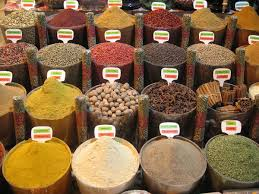

Contact Us
Phone: +91 8451860046

 +91 9819701924
Email: homespices2017@gmail.com
+91 9819701924
Email: homespices2017@gmail.com
We are available 24X7 at your service.
Our Market
The fascinating history of Indian spices is a story of adventure, exploration and conquest. Wherever early civilizations sprouted, Indian spices remained the essential ingredient inspiring trade, maritime conquests and discoveries, wars and treaties;exerting more power than empires and emperors.Spices made history. It defined not only fine taste, aroma and good health, but culture, religion, social status, power and even geographical boundaries. with Good Quality for Providing the SWADISHT JINDAGI to all over the India.
Spices are aromatic substances of plant origin, used in small quantities as food additives or in drinks, for taste, smell, colour, as preservative or anti-bacterial agents, or as refreshing or invigorating agents. Some of these have a strong, pungent smell and taste; some others have hotter and sharper taste. Some are enchantingly fragrant; some are mildly sweet and in charming colours. Using Indian spices masala in cooking has a long history, dating back to 52,000 years. In earlier centuries, spices were considered as valuable commodities. This extremely lucrative business was long dominated by the Arabs who transported their merchandise to Europe via Egypt. The inherent adaptability and natural goodness of spices have inspired the world to discover more and more spices for their therapeutic, preservative and cosmetic properties.

Spices add aroma and flavour to the foods. In the sixteenth century, cloves were used to preserve food without refrigeration. Cloves contain a chemical called eugenol that prevents the growth of bacteria. Mustard and ground mustard were also found to have preservative qualities. More and more master chefs and gourmets research the origin of Indian cuisine to seasons, festivals and regions of India that there is a better understanding of the role spices play in our well-being. Not only does the food look, smell and taste delicious, it heals, soothes and rejuvenates. Ayurveda, the indigenous system of Indian medicine, uses a large number of spices in its combination of preventive and curative medicines.
Spices are used in different forms - whole, chopped, ground, roasted, sautéed, fried and as topping. They blend food to extract the nutrients and bind them in a palatable form.
Phone: +91 8451860046
+91 9819701924
Email: homespices2017@gmail.com
We are available 24X7 at your service.